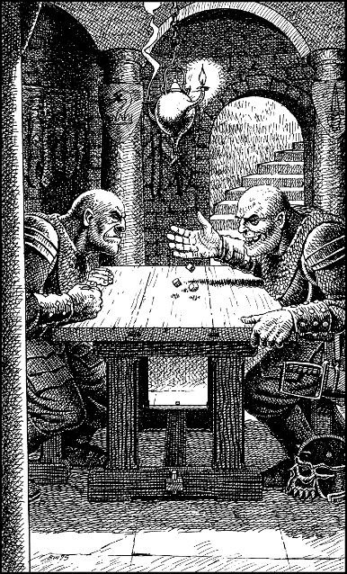

20
The lock disengages with a soft, well-oiled snick 6 and you push open the door just enough to allow you to slip inside. Beyond the door you discover a pillared hall, its circular walls bedecked with battered shields and torn banners captured in battle. In the oily glow of a sputtering lantern you see two Drakkarim seated at a wooden table in the middle of the hall. They are playing dice and neither warrior notices you enter.
Quietly you close the door and then hide behind one of the pillars which encircle this hall. Beyond the Drakkarim, you can see an archway in the opposite wall which leads to a flight of stone steps. This appears to be the only other exit from the hall and you resolve to reach it without being seen.

If you possess Assimilance, turn to 58.
If you possess Kai-alchemy and wish to use it, turn to 205.
If you possess Elementalism and have attained the rank of Kai Grand Defender or higher, turn to 326.
If you do not possess any of these Disciplines, or if you have yet to attain the required level of Kai Mastery, turn instead to 111.
Footnotes
[6] This is the correct answer to the combination lock in Sections 39, 256, 293, and 348.